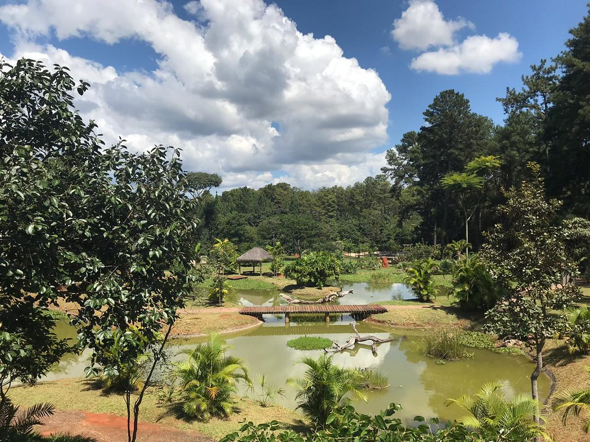
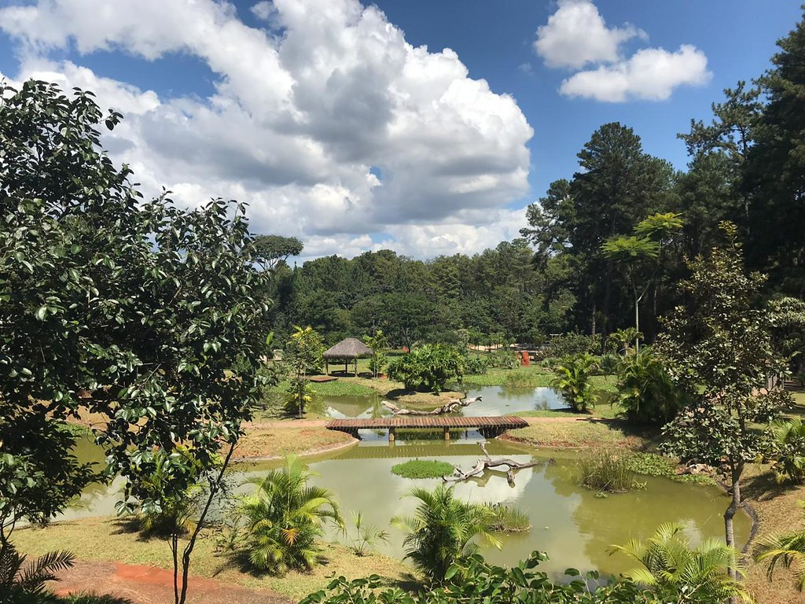

Apresentação
- O Jardim Botânico de Brasília é muito mais do que um simples parque. É um verdadeiro oásis verde, com uma rica biodiversidade
que abriga mais de 5.000 espécies de plantas nativas do Cerrado e de outras regiões do Brasil. Um convite para uma imersão
na natureza e na beleza da flora brasileira, em pleno coração da capital federal.
Galeria de Fotos
Atrações
- Trilhas ecológicas
- Coleções botânicas
- Lagos e espelhos d'água
- Casa de vegetação
- Mirante
Atividades
- Visitas guiadas: Para conhecer mais sobre a flora e a fauna do local.
Aulas de educação ambiental: Para crianças e adultos.
Eventos culturais: Exposições, oficinas e apresentações artísticas.
Pesquisa científica: O Jardim Botânico é um importante centro de pesquisa e conservação da biodiversidade.
Dicas
- Melhor época para visitar: Durante a primavera e o verão, a flora está mais exuberante.
O que levar: Água, protetor solar, repelente, chapéu e tênis confortáveis.
Alimentação: É proibido fazer piquenique dentro do jardim, mas há lanchonetes e restaurantes nas proximidades.
Câmera fotográfica: Para registrar os momentos especiais.
Curiosidades
- O Jardim Botânico de Brasília foi inaugurado em 1990.
A construção do jardim respeitou as características naturais do terreno.
O Jardim Botânico é um importante centro de educação ambiental.
Informações Práticas
- Endereço: Estrada Parque Contorno, s/n, Lago Sul, Brasília - DF
- Valor do ingresso: Consulte o site oficial para informações atualizadas.
- Horário de Funcionamento: De terça a domingo, das 9h às 17h.
- Facilidades: Banheiros, lanchonetes
Como Chegar
- O Jardim Botânico de Brasília está localizado no Lago Sul e pode ser acessado por carro ou transporte público.
Para quem vai de carro, há estacionamento no local.
- Transporte Público: Linhas de ônibus saindo da rodoviária do Plano Piloto: 0.181, 147.3, 147.5, 147.6, 180.1.
 
